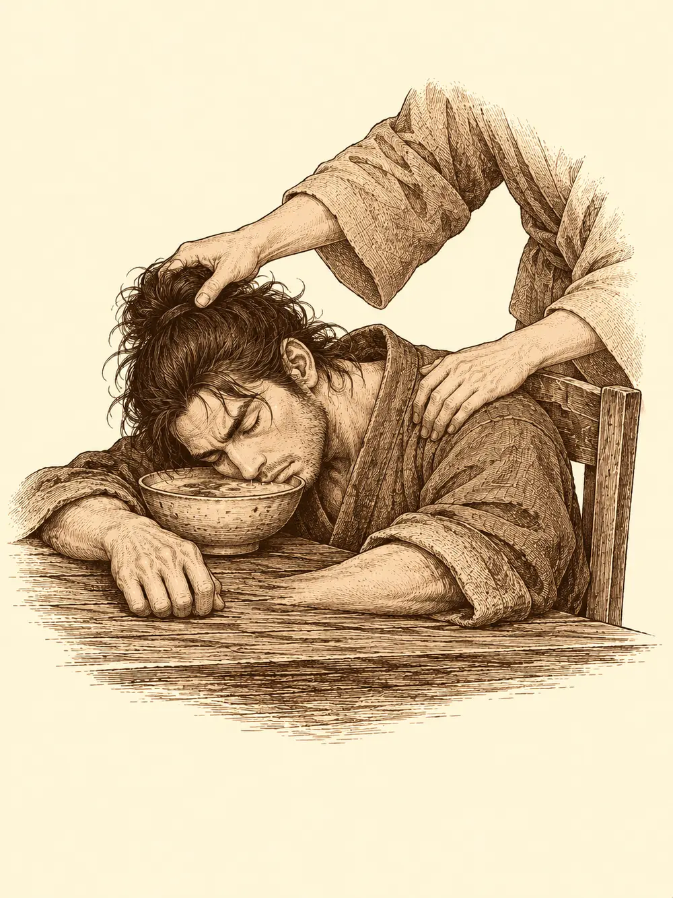

Capítulo 18
Tierra removida
Libro II · El favor del shogun
El bebé dormía demasiado. Sirth lo notó a media mañana, cuando el pequeño no lloró a la hora en que siempre lloraba, y luego tampoco a la siguiente. Respiraba tranquilo, con la boca entreabierta y los puños cerrados junto a las mejillas, y no había forma de despertarlo. El clérigo le apoyó dos dedos en la frente y pronunció una palabra de curación. La luz le bajó por el brazo, entró en el niño y no cambió nada.
"Esto es muy raro", murmuró. "Ni mi magia puede con esto".
Tekel lo miraba desde la puerta. Sirth le preguntó si los kender dormían tanto, y el kender negó con la cabeza.
No era solo el bebé. Al recorrer la base encontraron dormido a casi todo el mundo: los mujina con la cimitarra sobre las rodillas, la puerta de los mil ojos con todos los párpados cerrados. Sirth se fue preocupando cada vez más. Bajó hasta la habitación de Jin y llamó. Nadie contestó.
"¿Puedes abrir esto sin romper la puerta?", le preguntó a Tekel.
Tekel podía. La habitación estaba vacía. Jin no estaba. Sobre la mesa había papeles escritos en una lengua que ninguno de los dos sabía leer, una escritura retorcida que a Sirth le olió a infierno y a cosas que no se nombran. Tekel la miró de cerca, frunció la nariz y tampoco entendió nada.
"Este está haciendo algo chungo", dijo Sirth, metiéndole los papeles al kender bajo la nariz. "Esto no es normal".
Le pidió a Tekel que saliera. Cerró la puerta con llave.
Se quitó la camisa y con la punta de una hoja se abrió unos cortes en el pecho, junto a las cicatrices que le había dejado la última respuesta de su dios. Dejó que la sangre goteara al suelo y con ella trazó un círculo. Se arrodilló en el centro y empezó a recitar en voz baja las palabras que conocía, palabras que no eran bonitas de oír. No pedía nada concreto. Solo adoraba, y esperaba una señal.
Cuando terminó, inclinó la cabeza en una reverencia. Al incorporarse, la mirada se le fue hacia un lado, hacia debajo de la cama. Allí había una pala con tierra fresca todavía pegada a la hoja. Y junto a ella, una urna funeraria.
"Gracias, mi señor".
Se vistió, recogió las dos cosas y abrió la puerta. Tekel y Shiru lo esperaban fuera.
"Mirad lo que estaba debajo de la cama".
La urna estaba vacía. Tenía un nombre grabado, y los tres lo conocían. Habían estado en aquel funeral. Era la urna de Kitaro.
Fuera, todo Ukio dormía.
Había gente tumbada en mitad de la calle, en los portales, sobre los bancos. Una mujer se había quedado dormida en una postura tan torcida que al despertar iba a necesitar un masajista. El herrero roncaba en su taller con la cabeza apoyada en el yunque como en una almohada. En la taberna, un cliente se había dormido con media cara metida en un cuenco de sopa; alguien le levantó la cabeza con cuidado y lo apoyó contra el respaldo para que no se ahogara. El pescadero dormía abrazado a un pez. La madame y sus empleadas, también.
Shiru, para comprobarlo, dio un par de vueltas sobre sí mismo como un perro que busca acomodo y se echó un momento en la tierra.
"Está blandita. A cualquiera le entraría sueño".
Sirth lo agarró por los cuernos, sin hacer fuerza, y le giró la cabeza hacia la calle llena de durmientes.
"Mira. Están todos dormidos".
Fueron al cementerio. La tumba de Kitaro estaba abierta y la tierra removida. Mientras la miraban, a Sirth le llegó desde un edificio cercano un sonido que no era de pájaros. Era un canto, grave, rítmico, de voces que recitaban algo a coro. Venía del mausoleo que había junto al cementerio, el de una familia noble que hacía tiempo lo había abandonado. Sobre la gran puerta de madera y metal reforzado, unas letras decían: Mausoleo del Crepúsculo.
Tekel abrió la puerta.
Les golpeó un olor a podrido que les hizo retroceder. Detrás del umbral, el suelo estaba encharcado de algo que burbujeaba y humeaba: ácido. Una trampa que alguien había activado y que no había vuelto a su estado normal. Había que saltar por encima.
Shiru agarró a uno de sus compañeros, lo levantó como a un saco y lo lanzó al otro lado. Lo intentó de nuevo con Sirth, y el clérigo empezó a caer hacia el charco, pero en el último instante se desvaneció en una bruma y reapareció en la otra orilla, seco. Los demás cruzaron como pudieron.
Al fondo de la sala, junto a un altar, había una masa de carne. Tenía tres o cuatro brazos saliéndole del cuerpo y una cara deforme, y mientras la miraban se deshizo como si fuera grasa al fuego, una carne viscosa que se escurrió entre las losas hacia el altar y desapareció.
"Sacadme de aquí".
La voz era familiar. Venía de detrás de unos barrotes, a un lado. Era Jin.
"Todavía estamos a tiempo", dijo desde su encierro. "Si no terminamos el ritual y no derrotamos a los guardianes, el pueblo va a seguir durmiendo. Yo iba a hacerlo, pero esa criatura que habéis visto se fusionó con el altar".

Sirth se tapó la cara con la mano. Miró a Shiru, miró a Jin, y volvió a mirar a Shiru.
"Te has propuesto revivir a un muerto tú solo", le dijo a Jin. "Y no me lo consultas a mí".
"No podía contártelo. Me habrías dicho que eso está mal. Quería arreglarlo por mi cuenta".
Tekel abrió la cerradura sin esfuerzo. Shiru, por si acaso, agarró los barrotes y los dobló hacia fuera como si fueran de mantequilla. Jin salió y fue derecho hacia el altar, donde había una pequeña estatua, una reliquia.
Al tocarla, los sarcófagos se movieron. Las tapas se deslizaron con un roce de piedra y de dentro salieron dos momias, envueltas en vendas sucias, con los brazos extendidos. Sobre una cornisa, una gárgola de piedra abrió las alas.
Sirth sacó por fin el símbolo que siempre llevaba oculto, y sus compañeros lo vieron con claridad: un círculo, una calavera en el centro, gotas de sangre alrededor. Recitó unas palabras de su dios y una de las momias se dio la vuelta y huyó hasta el fondo de la sala. Junto al clérigo apareció una espada hecha de luz espectral, que flotaba en el aire y golpeaba sola.
La gárgola bajó en picado sobre Shiru. Le mordió, le arañó, y Shiru le estampó el escudo en los dientes. Luego la agarró. La gárgola pesaba como media tonelada y forcejeó, pero Shiru, tras varios intentos, consiguió tirarla al suelo y quedarse encima de ella, sujetándola.
Tekel se movía con una agilidad que no parecía natural, disparaba, se apartaba sin que nadie pudiera alcanzarlo. Jin descubrió que el fuego les hacía especial daño a las momias y empezó a quemarlas con su espada. Pero las momias pegaban fuerte, con golpes que dejaban la carne podrida alrededor, y uno de esos golpes alcanzó a Jin. Sirth le lanzó una cura y la magia no prendió: algo en el golpe de la momia le había dejado a Jin una maldición que rechazaba la curación.
"Siempre tienes que estar liándola", le dijo el clérigo. "Si no nos hubieras dejado atrás, no te habría pasado esto".
A su alrededor giraban espíritus oscuros que mordían a los enemigos, pero las momias apenas se inmutaban.
La gárgola, todavía en las manos de Shiru, empezó a brillar por dentro con un tictac de piedra que se agrieta.
Shiru no lo pensó. La levantó por encima de la cabeza con un gruñido y la lanzó contra una de las momias. Las dos estallaron. Entre los trozos de piedra apareció una esfera roja que parpadeaba, y la esfera reventó también, y la explosión alcanzó a todos los que estaban cerca.
Quedaba una momia.
"¡Shiru!", gritó Sirth. "¡Coge mi arma!".
Nadie sabía si se podía coger una espada hecha de espíritu. Shiru corrió, alargó la mano y la agarró. Era fría y pesaba poco. Se la clavó a la momia por la espalda y la partió en dos de un tajo.
Sirth hizo que la espada cambiara de forma en el aire, la convirtió en un hacha translúcida y luego la hizo desaparecer. Shiru se quedó mirándose la mano vacía.
Entre las vendas de una de las momias Sirth encontró un látigo de cadenas, muy bien forjado. Lo llamaban el látigo de las penumbras, y con él podía sembrar el miedo en quien golpeara. Tekel encontró una ballesta ligera, la ballesta de la luz, que daba a sus virotes un fulgor que quemaba.
Jin tomó la pequeña estatua del altar y recitó unas palabras. En la mesa, delante de ellos, había un cuenco con cenizas. Las cenizas empezaron a desaparecer, como si alguien las aspirase desde dentro de la tierra, y al lado de Jin se fue formando una figura. Primero una sombra, luego un contorno, luego un hombre.
Kitaro.
No era el mismo de antes. La ofrenda había costado cien monedas, y lo que devolvía no era una vida como la que se había perdido. Lo traía de vuelta como un retornado, un muerto que vuelve una sola vez, porque esa segunda oportunidad no se puede repetir.
En ese mismo momento, por todo Ukio, la gente empezó a despertar. Se frotaban los ojos en las calles y se levantaban de los portales sin entender qué les había pasado. La estatua se había estado alimentando de los sueños de todo el pueblo mientras el ritual seguía abierto, y al cerrarse, los soltó.
Jin bajó la cabeza.
"Lo siento. Le debía mi vida. Quería devolvérsela".
"Si me lo hubieras pedido desde el principio, lo habríamos hecho juntos", contestó Sirth.
Después se acercó a Shiru con el látigo en la mano.
"¿Has visto mi látigo?".
Shiru lo había visto. Lo que quería ver otra vez era la espada. Sirth la invocó de nuevo y fue cambiándole la forma delante de él: una alabarda, un mandoble, otra espada más larga, y la usó para hacer picadillo con lo que quedaba de las momias.
De vuelta en la base, Tekel se sentó ante una mesa cubierta de objetos y se puso a explicar a las dos pequeñas kender, una por una, de qué vecino dormido había sacado cada cosa, para que entendieran que mantener los objetos a buen recaudo mientras sus dueños no podían vigilarlos era una obra buena.